Bären – Hörverstehen mit Lückentext (interaktiv)

Butterfahrt – Hörverstehen mit Lückentext (interaktiv)
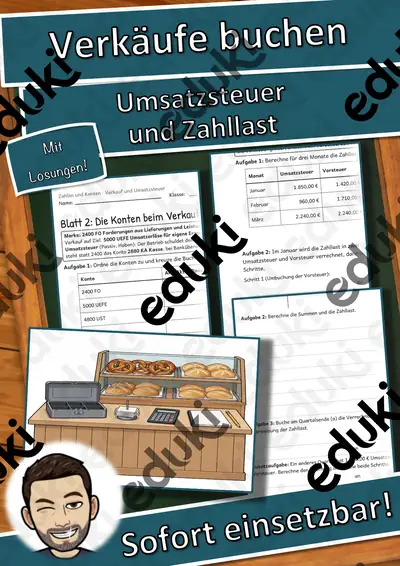
Verkäufe buchen: Umsatzsteuer und Zahllast – Arbeitsheft mit Lösungen (BwR 8, Realschule Bayern)
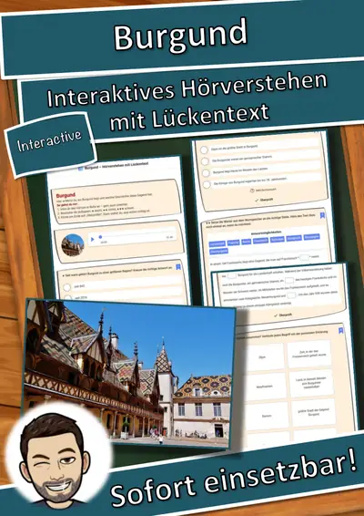
Burgund – Hörverstehen mit Lückentext (interaktiv)

Burgenland – Hörverstehen mit Lückentext (interaktiv)
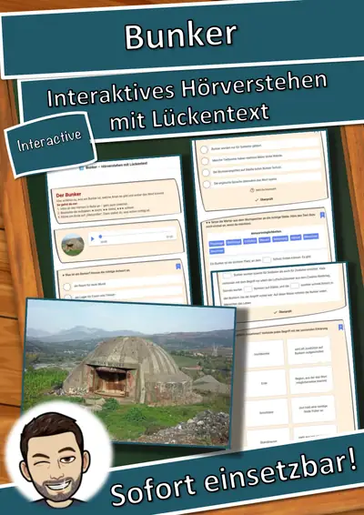
Bunker – Hörverstehen mit Lückentext (interaktiv)

Bundestagswahl 2025 – Hörverstehen mit Lückentext (interaktiv)

Angebote vergleichen: Einkaufskalkulation – Arbeitsheft mit Lösungen (BwR 8, Realschule Bayern)
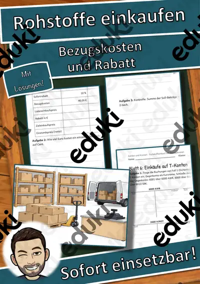
Rohstoffe einkaufen: Bezugskosten und Rabatt – Arbeitsheft mit Lösungen (BwR 8, Realschule Bayern)

Bumerang – Hörverstehen mit Lückentext (interaktiv)
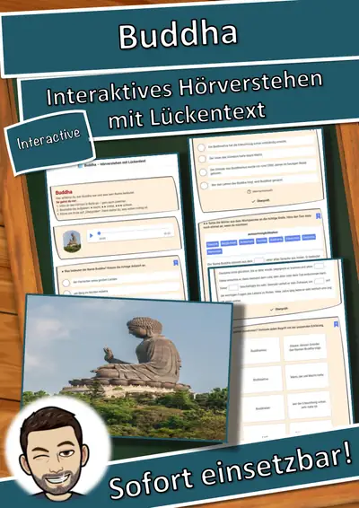
Buddha – Hörverstehen mit Lückentext (interaktiv)

Buckingham Palace – Hörverstehen mit Lückentext (interaktiv)

Bewerbungsanschreiben Lückentext mit Wortspeicher Hörverstehen und Suchsel

Buckelwal – Hörverstehen mit Lückentext (interaktiv)
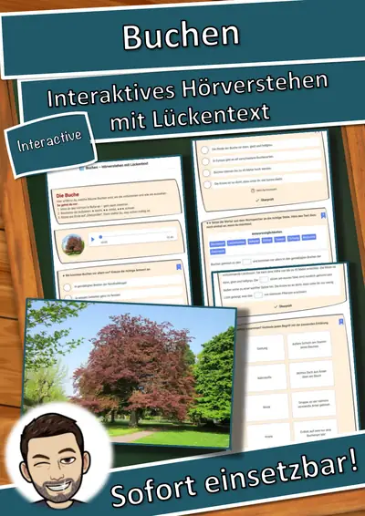
Buchen – Hörverstehen mit Lückentext (interaktiv)

Bewegungskoordination Lückentext mit Wortspeicher Hörverstehen und Suchsel

Brüssel – Hörverstehen mit Lückentext (interaktiv)

Zypern – Hörverstehen mit Lückentext (interaktiv)

Bretagne – Hörverstehen mit Lückentext (interaktiv)

Brügge – Hörverstehen mit Lückentext (interaktiv)

Bronzezeit – Hörverstehen mit Lückentext (interaktiv)

Bregenz – Hörverstehen mit Lückentext (interaktiv)
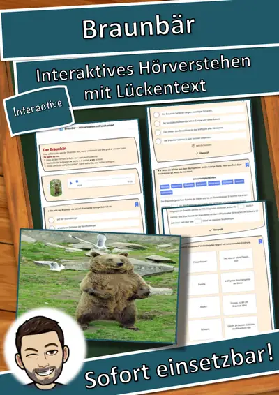
Braunbär – Hörverstehen mit Lückentext (interaktiv)

Bratwurst – Hörverstehen mit Lückentext (interaktiv)

Brombeere – Hörverstehen mit Lückentext (interaktiv)

Brezel – Hörverstehen mit Lückentext (interaktiv)

Brandenburg an der Havel – Hörverstehen mit Lückentext (interaktiv)

Bozen – Hörverstehen mit Lückentext (interaktiv)

Boxer (Hund) – Hörverstehen mit Lückentext (interaktiv)

Boston – Hörverstehen mit Lückentext (interaktiv)

Brennnessel – Hörverstehen mit Lückentext (interaktiv)

Bremsen (Insekten) – Hörverstehen mit Lückentext (interaktiv)

Bosnien und Herzegowina – Hörverstehen mit Lückentext (interaktiv)
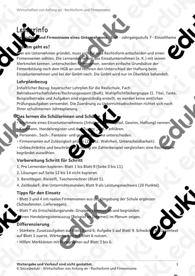
Rechtsform und Firmenname: Grundlagen für Unternehmen – Arbeitsheft mit Lösungen (BwR 7, Realschule)

Borkum – Hörverstehen mit Lückentext (interaktiv)

Borkenkäfer – Hörverstehen mit Lückentext (interaktiv)

Braunschweig – Hörverstehen mit Lückentext (interaktiv)
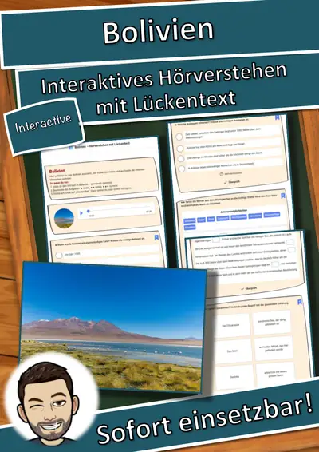
Bolivien – Hörverstehen mit Lückentext (interaktiv)

Bochum – Hörverstehen mit Lückentext (interaktiv)

Blut – Hörverstehen mit Lückentext (interaktiv)

Blindschleiche – Hörverstehen mit Lückentext (interaktiv)

Blätterteig – Hörverstehen mit Lückentext (interaktiv)

Bisamratte – Hörverstehen mit Lückentext (interaktiv)
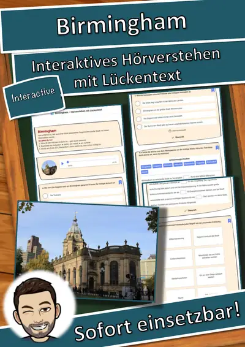
Birmingham – Hörverstehen mit Lückentext (interaktiv)
Beherrschung des Feuers Lückentext mit Wortspeicher Hörverstehen und Suchsel

Berufsschule – Hörverstehen mit Lückentext (interaktiv)
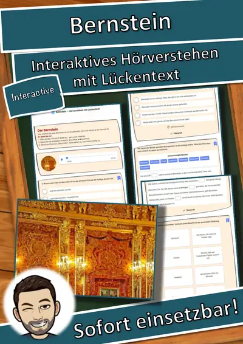
Bernstein – Hörverstehen mit Lückentext (interaktiv)

Bern (Stadt) – Hörverstehen mit Lückentext (interaktiv)
Keine Materialien gefunden – versuch einen anderen Suchbegriff oder Filter.